Environmental Science
Ennum njangade maanathoode Minnum tharakamodothangane Sandhya mayangum nerathingane Chandrika thookaan vannoode?
What does Malu tell the Moon?
58

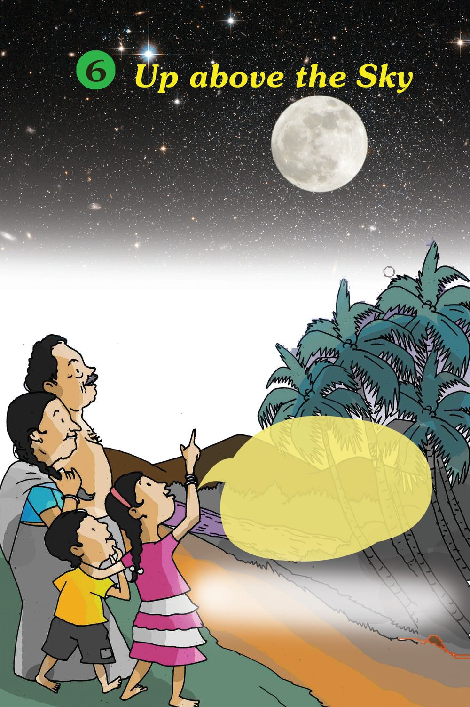
Environmental Science
Ennum njangade maanathoode Minnum tharakamodothangane Sandhya mayangum nerathingane Chandrika thookaan vannoode?
What does Malu tell the Moon?
58
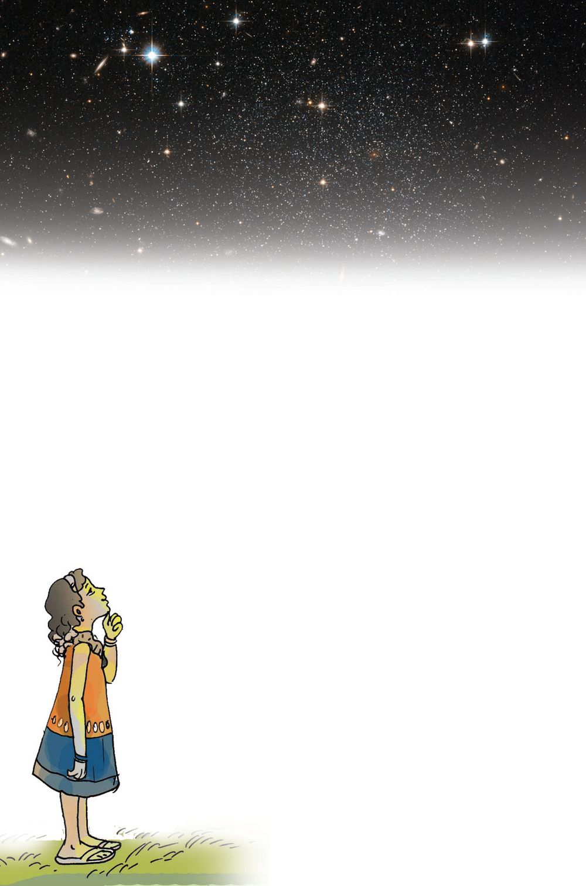
Moonlight “Wow so interesting! Countless twinkling stars and the moon in all its glory.” Friends, haven’t you seen such marvellous things in the sky? “Why is the moonlight not hot, Father?” Malu asked. “The sun is a star that gives out heat and light of its own. But the moon can’t do that. It only reflects the sunlight that falls on it,” father said.
Stars Stars are heavenly bodies that shine in the sky. The sun is a star.
Planet and satellite
Satellites are heavenly bodies that revolve around planets. The moon is the satellite of the earth. 59 59
Up above the Sky
Planets are heavenly bodies in the sky that revolve around the sun along a definite path. The earth is a planet.

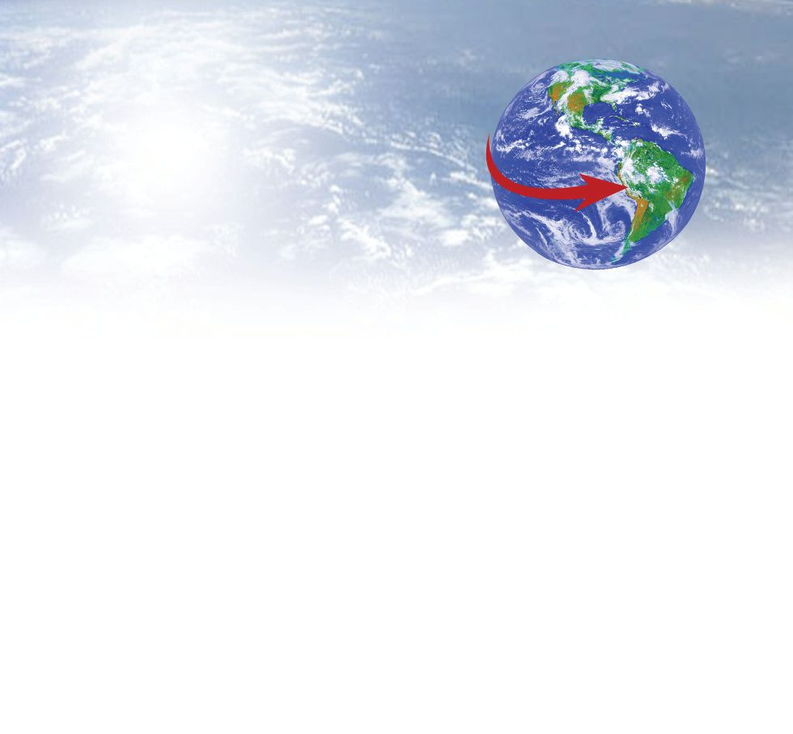
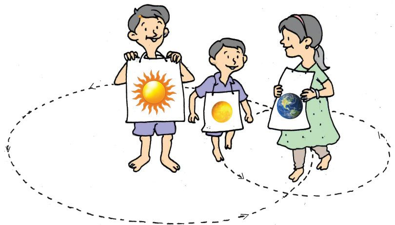
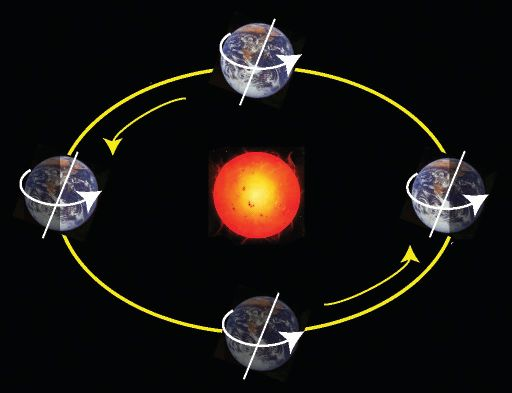
You know that the earth rotates on its axis, and the part of the earth on which sunlight falls experiences day and the other part experiences night. The spinning of the earth on its own axis is called rotation. It takes 24 hours for the earth to complete one rotation. This is one day. The earth also revolves around the sun, in addition to its rotation. The movement of the earth around the sun is called revolution. The earth takes 365 1/ 4 days to move around the sun once.This is one year. You can now demonstrate in your class, with your friends, the rotation and the revolution of the earth and the moon.
Environmental Science
Sun
Moon
Earth
Notice the position of the sun, the earth and the moon when they come in a straight line. 60

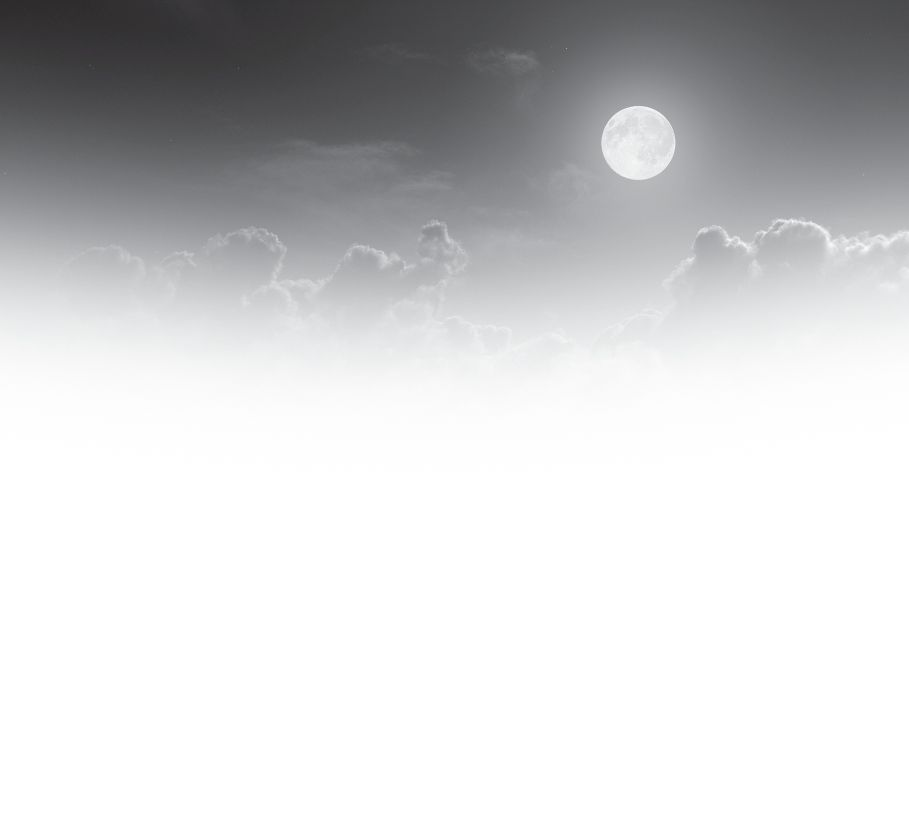
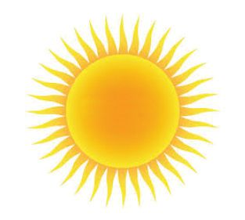
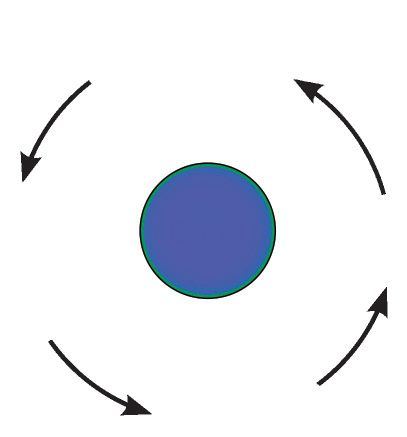
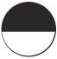
New Moon day
Why is the moon fully bright on some nights and not seen on other nights?
Sun
Observe the picture. Can the part of the moon on which sunlight falls be seen from the earth when the sun, the moon and the earth come in a straight line? Doesn’t the part of the moon that faces the earth appear to be dark? The moon is not seen at all when the part of the moon that does not get sunlight faces the earth. This day is called New Moon day (Amavasi or Karuthavavu).
Moon
Earth
In the picture below, you can see that the sun, the earth and the moon are in a straight line. The part of the moon where sunlight falls faces the earth. The day on which the illuminated part of the moon is fully visible from the earth is called Full Moon day ( Pournami or Veluthavavu). Full Moon day
Earth Moon
61
Up above the Sky
Sun

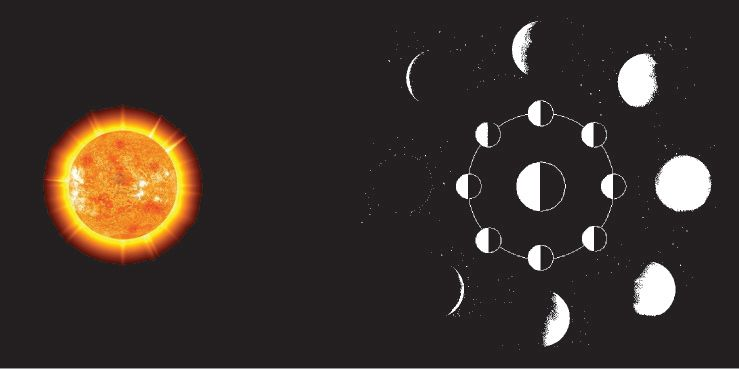
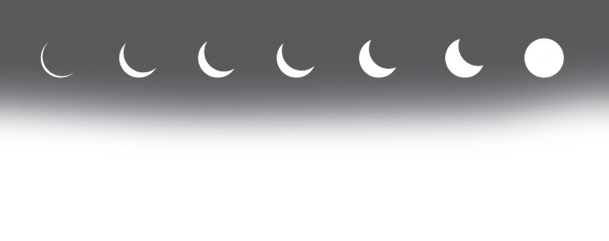
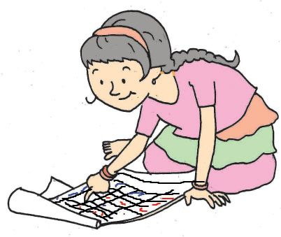
The growing crescent Observe the moon from the New Moon day to the Full Moon day and draw the picture of the moon you see on each night. Present it in your class and also prepare a chart of this. Days
Time of observation
Shape of the moon
Day 1 Day 4 Day 7 Day 10
Examine the completed table and note down your findings. Now compare the chart you have drawn with the picture given below with respect to the position and shape of the moon.
Sun
Environmental Science
The moon as seen from the earth
How many days are there between one Full Moon day and the next one?
How many days are there between one New Moon day and the next Full Moon day?
Find out the answer from the calendar. Note it down in the environment diary. 62

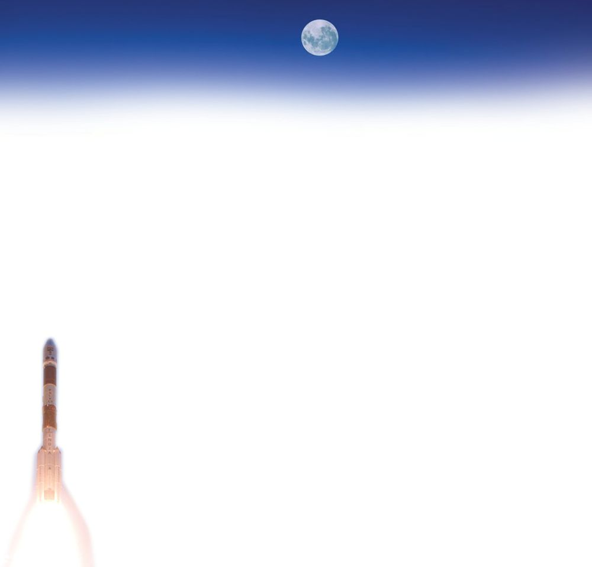
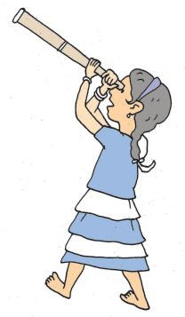
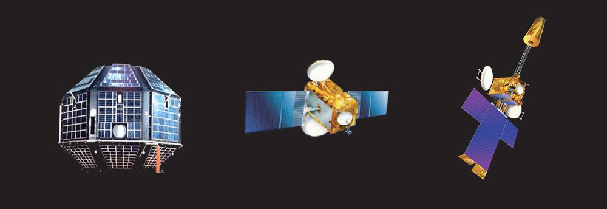
Towards the moon Friends, look at the moon. Is it the same as it appears to us from the earth? It is full of rocks, pits and hills. Neil Armstrong, the American astronaut, was the first man to land on the moon. Later several people went to the moon and brought soil and rocks from there. Is there anyone who doesn’t wish to go to the moon? India sent a spacecraft called Chandrayan 1,to the moon. It went around the moon and provided us with valuable information. The success of Chandrayan is, indeed, a matter of pride for all Indians.
Artificial satellites
Aryabhatta
EDUSAT
INSAT 3 A
Artificial satellites are satellites made by man and sent to space for various purposes. These satellites are sent to outer space with the help of rockets. Aryabhatta, EDUSAT and INSAT are some of the artificial satellites launched by India.
What are the uses of artificial satellites?
communication
weather forecast
63
Up above the Sky
Collect names and pictures of other artificial satellites and prepare an album.

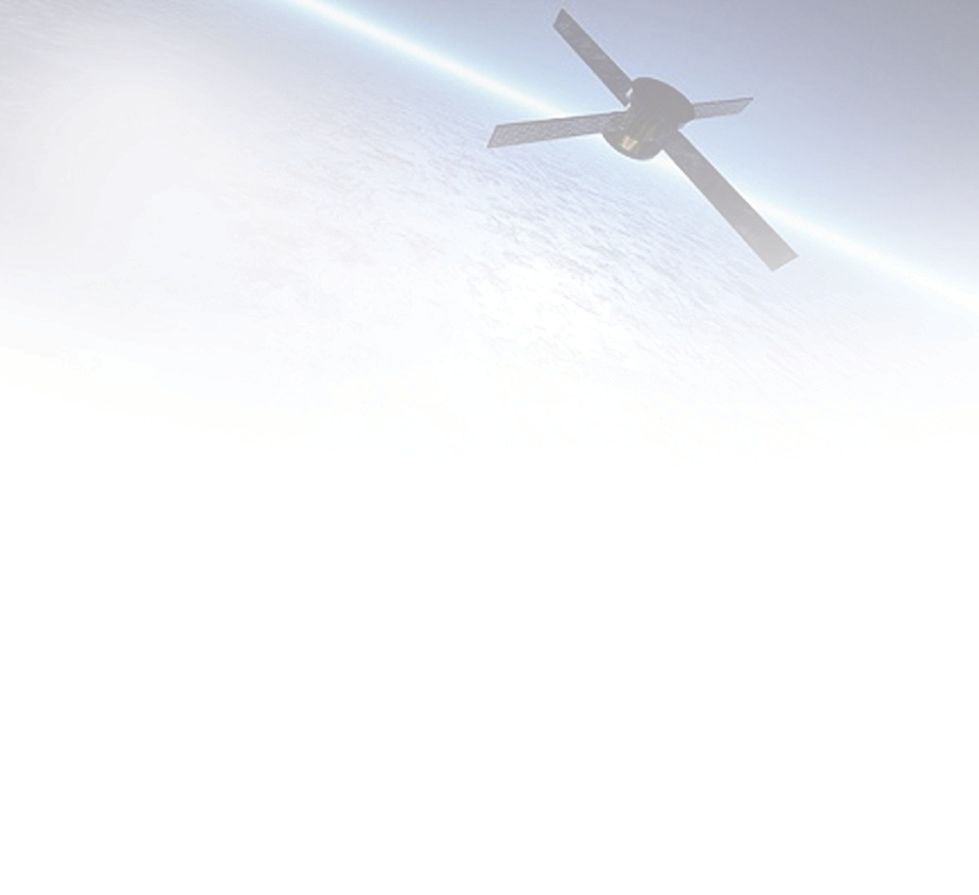
transportation
Thus the wonders of the sky are never ending. Let us step into this world of great amusement and knowledge.
Significant learning outcomes The learner
illustrates rotation and revolution.
explains that day and night occur due to rotation. states that one year is the period that the earth takes to complete one revolution.
explains and foretells the phases of the moon.
explains why New Moon and Full Moon happen.
explains what planets and satellites are.
defines artificial satellites in a simple way.
Let us assess 1. 18th April 2015 is a New Moon day. When will the next Full Moon day be? 2. If 11th November 2015 is a New Moon day, when will the next New Moon day be? 3. Suppose last Sunday was a New Moon day. What would be the shape of the moon today?
Extended activities Organize an exhibition on the wonders of the sky. Collect pictures and news of Indian space missions. Examine different calendars and collect the names of months included in them. Make models of the earth, the sun, the moon and the stars and exhibit them in your class.
Environmental Science
64